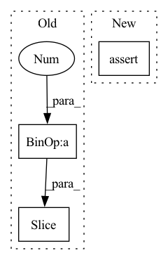

Pattern ID :11306
Before Change
def __getitem__(self, idx):
// get index data
data = self.data.iloc[self.data_index.index_start.iloc[idx] : self.data_index.index_end.iloc[idx] + 1 ].copy()
// todo: handle missings -> fill them up with strategy
// determine data window
sequence_length = len(data)
max_prediction_length = self.max_prediction_length
if self.randomize_length is not None:
// modify sequence length
sequence_length_prob, encode_length_probability = Beta(*self.randomize_length).sample(torch.Size([2]))
sequence_length = int(max(1, Binomial(sequence_length, sequence_length_prob).sample()))
max_prediction_length = int(max(1, Binomial(max_prediction_length, encode_length_probability).sample()))
if sequence_length < len(data):
data = data.iloc[-sequence_length: ] // select subset of sequence
encode_length = min(max(0, sequence_length - max_prediction_length), self.max_encode_length)
decode_length = sequence_length - encode_lengthAfter Change
// todo: handle missings -> fill them up with strategy
// determine data window
sequence_length = len(data)
assert sequence_length >= self.min_prediction_length
// determine prediction/decode length and encode length
decode_length = min(
data.iloc[-1]["__time_idx__"] - (self.min_prediction_idx - 1), self.max_prediction_length, sequence_lengthIn pattern: SUPERPATTERN
Frequency: 4
Non-data size: 3
Instances Fragment ID: 38461066
Project Name: jdb78/pytorch-forecasting
Commit Name: 79cfec0818dbe78d8773534e6ce8f5fd578c3c3a
Time: 2020-06-22
Author: beitner.jan@bcg.com
File Name: temporal_fusion_transformer_pytorch/data.py
M Class Name: TimeSeriesDataSet
N Class Name: TimeSeriesDataSet
M Method Name: __getitem__(2)
N Method Name: __getitem__(2)
M Parent Class: Dataset
N Parent Class: Dataset
M File Name: temporal_fusion_transformer_pytorch/data.py
N File Name: temporal_fusion_transformer_pytorch/data.py
M Start Line: 149
M End Line: 164
N Start Line: 186
N End Line: 220
Before Change
if padding_mode == "replicate":
// replication padding has some strange constraints...
assert len(tensor.shape) - dim <= 2
padding = padding[:(len(tensor.shape) - 2) * 2 ]
tensor_ = F.pad(tensor, padding, padding_mode, padding_value)
After Change
tensor = torch.movedim(tensor, dim, len(source_shape)-1)
dim_last_shape = tensor.shape
assert tensor.shape[-1] == source_shape[dim]
// we need reshape instead of view for batches like B x C x H x W
tensor = tensor.reshape(-1, 1, source_shape[dim]) Fragment ID: 38461064
Project Name: matthias-k/deepgaze
Commit Name: a2f6037f9ae20086ff19775583ed036167449172
Time: 2022-06-20
Author: matthias.kuemmerer@bethgelab.org
File Name: deepgaze_pytorch/layers.py
M Class Name: AnonimousClass
N Class Name: AnonimousClass
M Method Name: gaussian_filter_1d(7)
N Method Name: gaussian_filter_1d(7)
M Parent Class:
N Parent Class:
M File Name: deepgaze_pytorch/layers.py
N File Name: deepgaze_pytorch/layers.py
M Start Line: 130
M End Line: 160
N Start Line: 128
N End Line: 164
Before Change
_cinput[:,feat_id]-pos2)
_cinput[:,feat_id] = torch.min(pos1*torch.ones(_cinput.size(0),1),
_cinput[:,feat_id])
return _cinput[:,: next_feat_id+1 ] + offsets
else:
raise ValueError("input tensor and embeddings_per_feat do not match. Double check inputs.")
After Change
return self.qr_bucket_size
def shard_tensor(self, _input: Tensor, rank: int) -> Tensor:
assert _input.dim() == 2 \
and _input.size(1) == len(self.embeddings_per_feat)
if _input.device != self.device:
_input = _input.to(self.device) Fragment ID: 38461065
Project Name: hpcaitech/freqcacheembedding
Commit Name: c457a4a7eae219f07d82bb57179f70e084c2948f
Time: 2022-07-19
Author: e0496101@u.nus.edu
File Name: recsys/modules/embeddings/parallel_mix_vocab_embedding.py
M Class Name: LoadBalanceManager
N Class Name: LoadBalanceManager
M Method Name: shard_tensor(3)
N Method Name: shard_tensor(3)
M Parent Class: object
N Parent Class: object
M File Name: recsys/modules/embeddings/parallel_mix_vocab_embedding.py
N File Name: recsys/modules/embeddings/parallel_mix_vocab_embedding.py
M Start Line: 130
M End Line: 166
N Start Line: 132
N End Line: 180